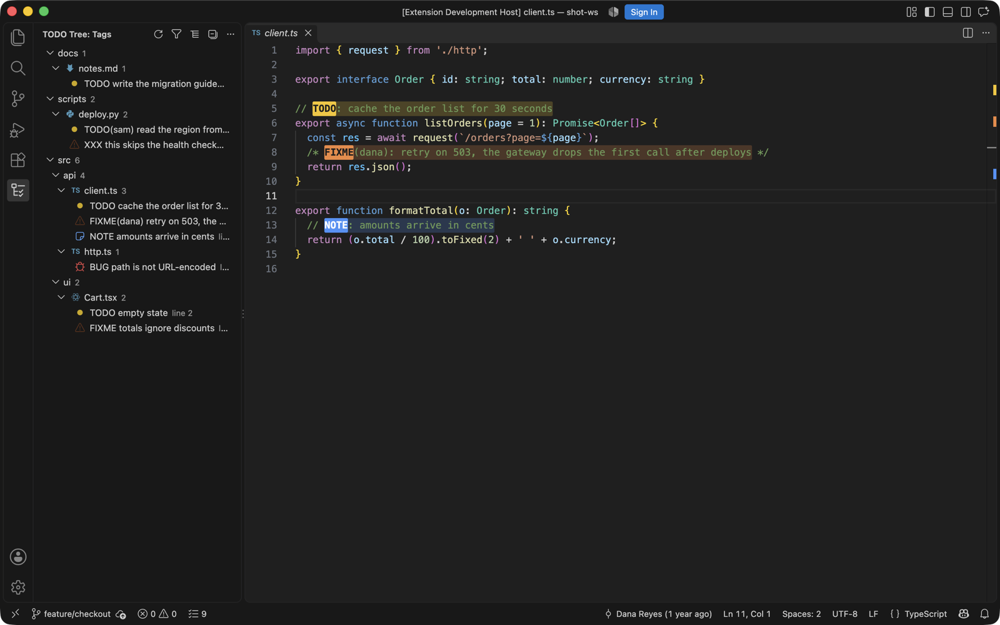

Open files in VS Code and Cursor / Code and APIs
See every TODO and FIXME of a workspace in VS Code
TODO Tree & FIXME Highlighter lists every TODO, FIXME, BUG, HACK, XXX and NOTE comment of your workspace in one tree in the Activity Bar, grouped by folder, file or tag, and highlights the tags in the editor in 60+ languages. Click a row to jump to the line. The scanner is built in, so there is no ripgrep and nothing to set up, and it makes no network requests. All of that is free. Zovo Pro (USD 19 once) adds a TODO report with git authors, the TODOs your branch changed, and a stale TODO finder, with 3 free tries each.
Free, MIT license. Extension ID zovo.zovo-todo-tree, version 0.1.0. Needs VS Code 1.75.0 or newer.

Steps in VS Code
- Install TODO Tree & FIXME Highlighter from the Marketplace, or press Ctrl+P (Cmd+P on macOS) and run
ext install zovo.zovo-todo-tree. - Open a folder. The TODO Tree icon in the Activity Bar shows every tag of the workspace, with counts, grouped by folder.
- Click a row to jump to that line. Tags inside comments are highlighted in every file you open.
- Use the buttons at the top of the tree to rescan, filter by text, tag, owner or path, or group by folder, file or tag. The status bar shows the tag count.
- Write owners as
TODO(anna): ...orTODO @anna ...and the tree shows the owner, so you can filter by person. - To find your own tags, such as REVIEW or PERF, add them to the setting
zovoTodo.tags, with colors inzovoTodo.tagColors.
Where Zovo Pro saves time
The tree, the highlights in 60+ languages, the built-in scanner, filters, owners, your own tags and colors and the four highlight styles are free, with no sign-in, no network requests and no telemetry. There is no trial timer and no license banner.
When the TODOs have to go into a ticket, a wiki page or a review, Export TODO Report writes every tag in the tree (or in one folder or file) to Markdown, CSV or HTML, with the git author and the date each tag was added, read from your local git blame. The other two Pro tools are TODOs Changed on This Branch, which lists the tags your branch added or removed against main (uncommitted edits included) ready to paste in a pull request, and Find Stale TODOs, which lists tags older than 90 days (you set the age), grouped by person, with a JSON file for CI.
With Export TODO Report (Zovo Pro)
- Click the Export TODO Report button at the top of the tree, or right-click a folder or file in the tree, or run "TODO Tree: Export TODO Report (Pro)" from the Command Palette.
- Pick Markdown, CSV or HTML, then where to save the report.
- Click Open in the message to see the report.
Export TODO Report works 3 times on your computer before it asks for a license, and a try counts only when you get a result. Opening a file shows no popup and no countdown.
Zovo Pro costs USD 19 once. It is not a subscription, and it turns on the Pro tools in every Zovo extension, not only TODO Tree & FIXME Highlighter. After a card payment (Stripe) your license key shows on the next page. In VS Code, run "Zovo Pro: Enter Zovo Pro license key" from the Command Palette and paste it. The key is checked on your computer, with no network call. With GitHub Sponsors, pick the "$19 one time" tier, then run "Zovo Pro: I already paid: unlock with GitHub Sponsors" and sign in with the same GitHub account. With PayPal, send USD 19 with "Zovo Pro" in the note and the key comes by email within a day.
A team of 5: USD 59 once, by card or by PayPal. Every rule and every Pro tool is on the Zovo Pro page.
Steps in Cursor, Windsurf or VSCodium
- Open the Extensions view with Ctrl+Shift+X (Cmd+Shift+X on macOS).
- Search for
zovo.zovo-todo-treeand click Install. Cursor, Windsurf and VSCodium install from Open VSX, where it is published aszovo/zovo-todo-tree. - If your editor has no gallery, download the .vsix from the Open VSX page and run "Extensions: Install from VSIX...".
- Then use it the same way as in VS Code.
What TODO Tree & FIXME Highlighter handles
- Comments in 60+ languages:
//,#,/* */,<!-- -->,--,;,%and more, plusTODO:lines and list items in Markdown and text notes. - Updates as you type, on save, and when files change on disk (git pull, branch switch).
- Skips what
.gitignoreandfiles.excludehide, build folders such as dist and out, files over 512 KB and binary files (all settings). - Four highlight styles: tag and text, tag only, whole line, or none.
What it does not do
- In a remote or virtual workspace without a local file system the highlights work, but the tree stays empty.
- Only one tag per line is listed: the first one inside a comment.
- A tag inside a string that looks like a comment, such as
"// TODO", can count as a tag in a few languages. - The scan stops after 20,000 files (setting
zovoTodo.maxFiles).
Other options
- Todo Tree (
Gruntfuggly.todo-tree, 7.9 million installs, on Open VSX). Its own description: "Show TODO, FIXME, etc. comment tags in a tree view". It searches with ripgrep. - TODO Highlight (
wayou.vscode-todo-highlight, 6.2 million installs, on Open VSX). Its own description: "highlight TODOs, FIXMEs, and any keywords, annotations...". - grep or ripgrep.
rg -n "TODO|FIXME"in a terminal lists the lines, with no tree and no highlights.
Install counts and Open VSX status were checked on 12 November 2026. Descriptions in quotes are the extensions' own.
Questions
Can VS Code list all TODOs without an extension?
Only through a search: press Ctrl+Shift+F (Cmd+Shift+F on macOS) and search for TODO. You get a flat list of matches, with no tree, no grouping and no highlight in the editor.
Does it need ripgrep?
No. It reads the files with its own built-in scanner, so there is no binary to install.
Does it send my code anywhere?
No. It reads files on your computer only, with no network requests and no telemetry. The Pro tools run your local git.
Does it work in Cursor or Windsurf?
Yes. Cursor, Windsurf and VSCodium install extensions from Open VSX. Search for the extension in their Extensions view and install it there.
More about TODO Tree & FIXME Highlighter
Read the TODO Tree & FIXME Highlighter page for every feature and setting, or the source code on GitHub.
Related guides
- Show code coverage on your source lines in VS Code
- Open a SARIF file in VS Code
- Preview a Swagger or OpenAPI file in VS Code
- Preview an HTML file with its CSS and images in VS Code
Zovo Pro and support
Zovo Pro: USD 19 once, every Zovo viewer. It turns on the Pro tools in this extension and in the other Zovo extensions you use. The free features stay free.
After a card payment your license key shows on the next page. Paste it with the command "Zovo Pro: Enter a key".
You can also support the work with no Pro:
Need your format supported?
Open a format request with a sample file, and I reply there whether it can be done. For USD 299 once, through this GitHub Sponsors tier, I add your file format or a missing feature to this extension, with tests, within 7 days.